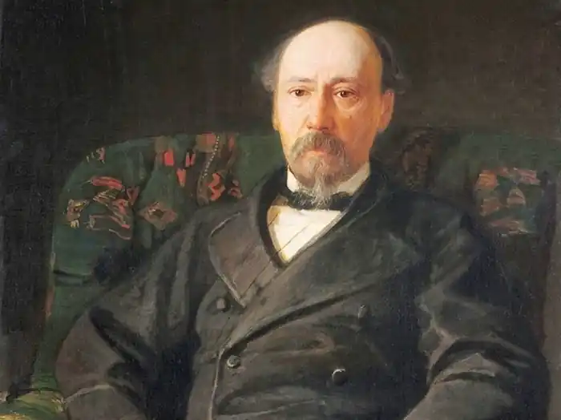

(1821-1877)
Відомий російський поет Микола Олексійович Некрасов походив з дворянської, колись багатої сім'ї. Народився 22 листопада 1821 р. у Вінницькому повіті Подільської губернії, де у той час мешкав полк, в якому служив батько Некрасова. Мати, Олександра Андріївна Закревська — варшав'янка, донька багатія. Батьки не погоджувалися видати дочку за небагатого, мало освіченого армійського офіцера; брак відбувся без їхньої згоди.
У низці віршів, особливо в "Останніх піснях", у поемі "Мати" і в "Лицарі на годину", Некрасов змалював світлий образ матері, яка скрасила непривабливу обстановку його дитинства. Чарівливість спогадів про матір позначилася на творчості Некрасова незвичайною чуйністю його до жіночої половини людства. Дитинство Некрасова минуло в родовому маєтку, селі Грешнево Ярославської губернії, куди батько, вийшовши у відставку, переселився. Величезна сім'я (у Некрасова було 13 братів і сестер), занедбані справи і ряд процесів по маєтку примусили його узяти місце справника. Під час роз'їздів він часто брав з собою сина. У1832 р. Некрасов вступив до ярославської гімназії, де дійшов до 5-го класу. Учився він погано, з гімназійним начальством не ладнав (частково через сатиричні вірші), й оскільки батько завжди мріяв про військову кар'єру для сина, то в 1838 р. 16-річний Некрасов вирушив до Петербурга для призначення у дворянський полк. Справа була майже залагоджена, але зустріч з гімназійним товаришем, студентом Глушицьким, і знайомство з іншими студентами викликали у Некрасова таку спрагу вчитися, що він знехтував погрозою батька залишити його без всякої матеріальної допомоги і став готуватися до вступного іспиту. Він його не витримав і вступив вільним слухачем на філологічний факультет університету. З 1839 до 1841 р. провчився Некрасов в університеті, але майже весь час у нього йшов на пошуки заробітку. Але справи його скоро пішли вгору: він давав уроки, писав статті в "Літературній Газеті", складав для лубкових видавців азбуки і казки у віршах, ставив водевілі на Олександрійській сцені (під ім'ям Перепельського). У нього почали з'являтися заощадження, і він зважився виступити зі збіркою своїх віршів, які вийшли в 1840 p., з ініціалами Н. Н-., під заголовком "Мрії і звуки". Це цікаво! Коли уперше вірші Некрасова були надруковані, Польовий похвалив дебютанта, з деяких відомостей до нього прихильно поставився Жуковський, але Бєлінський у "Вітчизняних записках" відгукнувся про книжку зневажливо, і це так подіяло на Некрасова, що, подібно до Гоголя, що колись скуповував і знищував "Ганса Кюхельгартена", він сам скуповував і знищував "Мрії і звуки", які тому і стали великою бібліографічною рідкістю (до І зібрання творів Некрасова вони не увійшли). На початку 40-х років Некрасов стає співробітником бібліографічного відділу "Вітчизняних записок". Бєлінський близько з ним познайомився, полюбив і оцінив його розум. Він зрозумів, проте, що в прозі з Некрасова, нічого, окрім рядового журнального співробітника, не вийде, але схвалив його вірш: "В дорозі". У1843-1846 роках Некрасов випустив у світ низку збірок: "Статейки у віршах без картинок", "Фізіологія Петербурга", "1 квітня", "Петербурзька збірка". Особливий успіх мала остання, у якій з'явилися "Бідні люди" Достоєвського. Видавничі справи Некрасова пішли настільки добре, що наприкінці 1846 р. він, разом з Панаєвим, придбав у Плетньова журнал "Современник". Багато співробітників "Вітчизняних записок" кинули Краєвського і приєдналися до Некрасова, Бєлінський також перейшов у "Современник" і передав Некрасову частину тих матеріалів, які збирав для збірки "Левіафан". Цим був забезпечений успіх нової справи. Приблизно у середині 50-х років Некрасов, здавалося, смертельно, захворів на горлову хворобу, але перебування в Італії покращило його стан. Одужання Некрасова збігається з початком нової ери російського життя. У творчості Некрасова також наступає щасливий період. Він потрапив у високе товариство: Чернишевський і Добролюбов стають головними діячами "Современник". Некрасов пише переважно громадянську поезію. У 1866 р. "Современник" був закритий, але Некрасов зійшовся зі старим своїм ворогом Краєвським і орендував у нього з 1868 р. "Вітчизняні записки", піднявши їх на таку ж висоту, яку посідав "Современник". На початку 1875 р. Некрасов тяжко захворів, і скоро життя його перетворилося на повільну агонію. Марно був виписаний з Відня знаменитий хірург Більрот; операція ні до чого не привела. З усіх кінців Росії посипалися листи, телеграми. Написані за цей час "Останні пісні" за щирістю почуття, що зосередилося майже виключно на спогадах про дитинство, про матір і про здійснені помилки, належать до його найкращих творів його музи. Некрасов помер 27 грудня 1877 р. Незважаючи на лютий мороз, натовп в декілька тисяч чоловік, переважно молоді, проводжав тіло поета до місця захоронення. Похорон Некрасова, що сам собою влаштувався без всякої організації, був першим випадком всенародного віддання останніх почестей письменникові. На самому похороні Некрасова зав'язалася або, точніше, продовжилася безплідна суперечка про співвідношення між ним і двома найбільшими представниками російської поезії — Пушкіним і Лермонтовим. Достоєвський, що сказав декілька слів біля відкритої могили Некрасова, поставив (з певними обмовками) ці імена поряд, але декілька молодих голосів перервали його криками: "Некрасов вище за Пушкіна і Лермонтова". Суперечка перейшла в пресу. Некрасов жодному з найбільших художників російського слова не поступається в силі. Він ніколи не залишає байдужим, завжди хвилює. І якщо розуміти "мистецтво" як суму вражень, що приводять до кінцевого ефекту, то Некрасов — художник глибокий; він виразив настрій одного з найчудовіших моментів російського історичного життя. Усі люди сорокових років більшою чи меншою мірою були плакальниками горя народного; але їхній пензель малював м'яко, і коли дух часу оголосив старому ладові життя нещадну війну, виразником нового настрою став Некрасов. Наполегливо, невблаганно б'є він в одну і ту саму точку, не бажаючи знати ніяких пом'якшувальних обставин. Некрасов не дає відпочинку своєму читачеві, не щадить його нервів, не боїться звинувачень в перебільшенні. Попри те, що більшість його творів сповнена найбезрадісніших картин народного горя, основне враження, яке Некрасов залишає своєму читачі, поза сумнівом, бадьорить. Читання Некрасова будить той гнів, який в самому собі має зерно зцілення. Проте звуками помсти і печалі про народне горе весь зміст поезії Некрасова не вичерпується. Некрасов теж раніше Тургенєва вивів людину, що прагнула до світла, яка основними контурами своєї психології нагадує Олену "Напередодні". Поема "Нещасні" (1856) попри свою розкиданість і строкатість, має строфи сильні й виразні. "Коробейники" (1861) мало серйозні за змістом, але написані оригінальним складом, в народному дусі. У1863 р. з'явився найстриманіший з усіх творів Некрасова — "Мороз Червоний Ніс". Героїня — російська селянка, в якій автор убачає зникаючий тип "величавої слов'янки". Поема малює тільки світлі сторони селянської натури, але все-таки, завдяки витриманості величавого стилю, в ній немає нічого сентиментального. За загальним складом до "Мороза Червоного Носа" наближається раніше написана чарівна ідилія: "Селянські діти" (1861). Запеклий співак горювань і страждань абсолютно перетворювався, ставав дивно ніжним, м'яким, незлобивим, як тільки справа стосувалася жінок і дітей. Пізніший народний епос Некрасова — написана украй оригінальним розміром величезна поема "Кому на Русі жити добре" (1873-1876). Найкраще в поемі — окремі, епізодично вставлені пісні і балади. На них особливо багата найкраща, остання частина поеми — "Бенкет на весь світ", що закінчується знаменитими словами: "ти і убога, ти і рясна, ти і могутня, ти і безсила, матінка Русь" і бадьорим вигуком: "у рабстві врятоване серце вільне, золото, золото, серце народне". Кінець іншої поеми Некрасова — "Російські жінки" (1871-1872) — побачення Волконської з чоловіком в копальні — належить до найзворушливіших сцен всієї російської літератури. Ліризм Некрасова виник на вдячному ґрунті пекучих і сильних пристрастей, що ним володіли, і щирої свідомості своєї етичної недосконалості. До певної міри живу душу врятували в Некрасові саме його "провини", про які він часто говорив, звертаючись до портретів друзів, що "докірливо зі стін" дивилися на нього. Його етичні недоліки давали йому живе і безпосереднє джерело поривчастої любові і жадання очищення. Сила закликів Некрасова психологічно пояснюється тим, що він творив в хвилини щирого покаяння. Хто примушував його з такою силою говорити про свої етичні падіння, навіщо треба було виставляти себе з невигідного боку? Але, очевидно, це було сильніше за нього. Поет цілком віддавався душевному пориву. Покаянню, яке викликає кращі перли з дна його душі, зобов'язаний Некрасов одним з кращих своїх творів — "Лицар на годину", якого одного було б досить для створення першокласної поетичної репутації. І знаменитий "Влас" теж вийшов з глибокого відчуття очищаючої сили покаяння. Сюди ж належить і прекрасний вірш: "Коли з мороку помилки ...", про який із захопленням відгукувалися навіть такі мало налаштовані до Некрасова критики, як Алмазов і Аполлон Григор'єв. Характерно, що російський модернізм, який оголосив війну всім традиціям 60-х років, Некрасова ставив дуже високо.